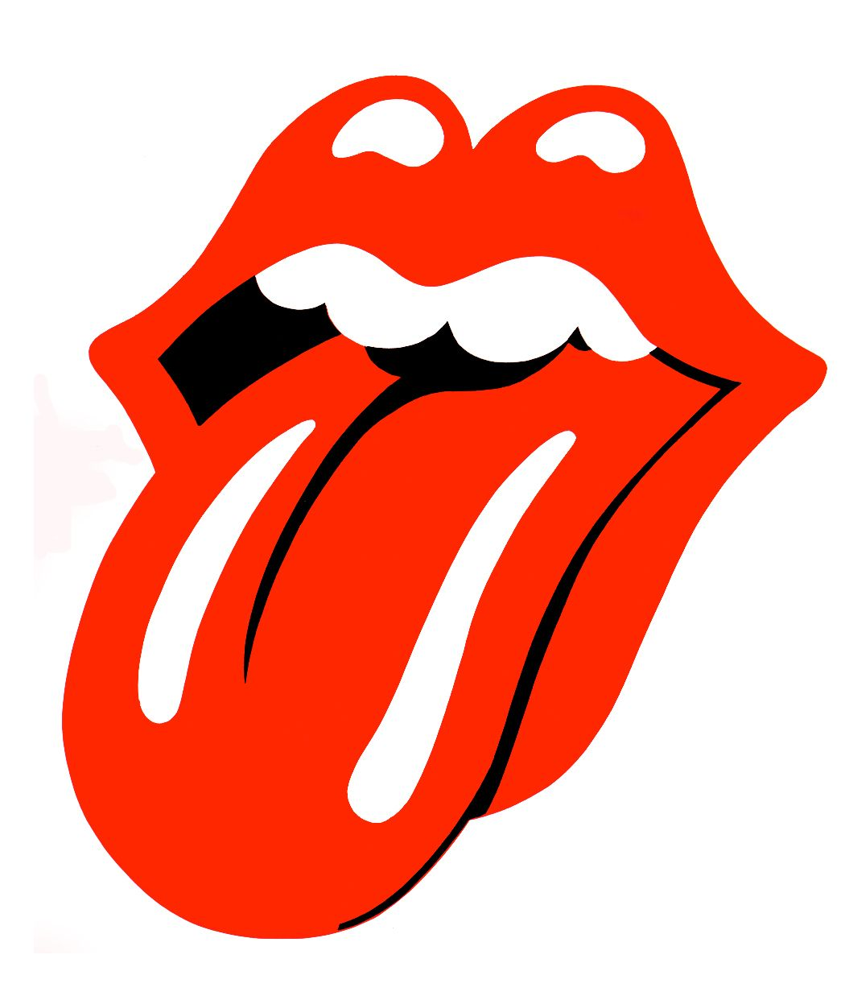

- High Voltage 1975
- T.N.T. 1975
- Dirty Deeds Done Dirt Cheap 1976
- Let There Be Rock 1977
- Powerage 1978
- Highway to Hell 1979
- Back in Black 1980
- For Those About to Rock We Salute You 1981
- Flick of the Switch 1983
- Fly on the Wall 1985
- Blow Up Your Video 1988
- The Razor's Edge 1990
- Ballbreaker 1995
- Sriff Upper Lip 2000
- Black Ice 2008
- Rock or Bust 2014
- Queen 1973
- Queen II 1974
- Sheer Heart Attack 1974
- A Night at the Opera 1975
- A Day at the Races 1976
- News of the World 1977
- Jazz 1978
- The Game 1980
- Flash Gordon 1980
- Hot Space 1982
- The Works 1984
- The Miracle 1989
- Innuendo 1981
- Made in Heaven 1995
- The Rolling Stones 1964
- 12 X 5 1964
- The Rolling Stones No. 2 1965
- Out of Our Heads 1965
- December's Children 1965
- Aftermatch 1966
- Between the Buttons 1967
- Their Satanic Majesties Request 1967
- Beggars Banquet 1968
- Let It Bleed 1969
- Sticky Fingers 1971
- Exile on Main St. 1972
- Goats Head Soup 1973
- It's Only Rock 'n Roll 1974
- Black and Blue 1976
- Some Girls 1978
- Emontional Rescue 1980
- Tatto You 1981
- Undercover 1983
- Dirty Work 1986
- Steel Wheels 1989
- Voodoo Lounge 1994
- Bridges to Babylon 1997
- A Bigger Bang 2005
- Blue & Lonesome 2016
- The Red Hot Chili Peppers 1984
- Freaky Styley 1985
- The Uplift Mofo Party Plan 1987
- Mother's Milk 1989
- Blood Sugar Sex Magik 1991
- One Hot Minute 1995
- Californication 1999
- By the Way 2002
- Stadium Arcadium 2006
- I'm with You 2011
- The Getaway 2016
- Foo Fighters 1995
- The Colour and the Shape 1997
- There is Nothing Left to Lose 1999
- One by One 2002
- In Your Honor 2005
- Echoes, Silence, Patience & Grace 2007
- Wasting Light 2011
- Sonic Highways 2014
- Concrete and Gold 2017
- The Offspring 1989
- Ignition 1992
- Smash 1994
- Ixany on the Hombre 1997
- Americana 1998
- Conspiracy of One 2000
- Splinter 2003
- Rise and Fall, Rage and Grace 2008
- The Way of the First 2007
- War Is the Answer 2009
- American Capitalist 2011
- The Wrong Side of Heaven and the Righteous Side of Hell 2013
- Got Your Six 2015
- And Justice for None 2018
- The Piper at the Gates of Dawn 1967
- A Saucerful of Secrets 1968
- Music from the Film More 1969
- Ummagumma 1969
- Atom Heart Mother 1970
- Meddle 1971
- Obscured by Clouds 1972
- The Dark Side of the Moon 1973
- Wish You Were Here 1975
- Animals 1977
- The Wall 1979
- The Final Cut 1983
- A Momentary Lapse of Reason 1987
- The Division Bell 1994
- The Endless River 2014
- System of a Down 1998
- Toxicity 2001
- Steal This Album! 2002
- Mezmerize 2005
- Hypnotize 2005
- The Big Come Up 2002
- Thickfreakness 2003
- The Moan 2004
- Rubber Factory 2004
- Magic Potion 2006
- Attack & Release 2008
- Brothers 2010
- El Camino 2011
- Turn Blue 2014